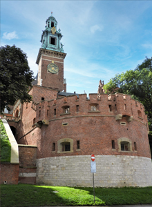
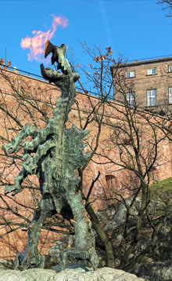
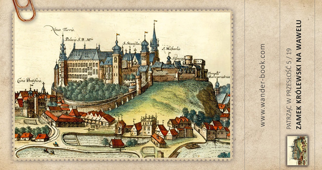

Zamek Królewski na Wawelu
Zamek Królewski na Wawelu to jeden z najważniejszych zabytków w Polsce, znajdujący się w samym sercu Krakowa, na wzgórzu Wawelskim. Zamek ten pełnił w przeszłości wiele różnych funkcji, takich jak siedziba królów Polski, rezydencja biskupów krakowskich, a także centrum administracyjne i kulturalne miasta. Obecnie jest to jedno z najważniejszych muzeów w kraju, gromadzących bogate zbiory dzieł sztuki, mebli, tkanin i innych przedmiotów związanych z historią Polski.
Zamek Królewski na Wawelu - znany i nieznany. Zaprszamy na magiczną podróż po tym cudownym miejscu.
Historia
W XI wieku na wzgórzu Wawelskim powstał pierwszy drewniany kościół oraz pałac książąt krakowskich, którzy tam rezydowali. W XIV wieku zamek przeszedł w ręce królów Polski, którzy rozpoczęli jego rozbudowę i przebudowę. W latach 70. XIV wieku król Kazimierz III Wielki rozbudował zamek o nowy pałac oraz zbudował Wieżę Srebrnych Dzwonów, a jego następca, Władysław II Jagiełło, wzniósł Wieżę Senatorską.
W XVI wieku podczas panowania Zygmunta Starego zamek przeżył kolejną rozbudowę. Wówczas powstała m.in. kaplica Zygmuntowska, a także Sala Poselska, w której odbywały się sejmy i narady monarchów. W czasach panowania Zygmunta III Wazy na zamku pojawił się styl barokowy, a zamek zyskał nowe pomieszczenia, takie jak Pałac Królewski, Wielka Sala Balowa oraz Wazownia.
W XVII wieku zamek został uszkodzony w czasie wojen szwedzkich, a w XIX wieku przeszedł gruntowną restaurację. W tym czasie zamek uzyskał swoją obecną formę, a wiele zabytkowych pomieszczeń zostało odrestaurowanych. W 1905 roku zamek stał się siedzibą Muzeum Narodowego, a obecnie jest jednym z najważniejszych muzeów w kraju, gromadzących bogate zbiory dzieł sztuki, mebli, tkanin i innych przedmiotów związanych z historią Polski.
Na terenie zamku znajdują się liczne zabytki, takie jak Kaplica Zygmuntowska, Sala Poselska, Izba Poselska, Zbrojownia, Katedra na Wawelu czy też Smocza Jama. Każde z tych miejsc ma swoją unikalną historię i wartości artystyczne.
Jednym z najbardziej znanych elementów Zamku Królewskiego na Wawelu jest Smocza Jama, legendarne miejsce, gdzie według podań mieszkał smok Wawelski.
Smok Wawelski
Historia Smoka Wawelskiego jest jednym z najbardziej znanych mitów w Polsce. Legenda ta opowiada o potworze zamieszkującym na wzgórzu Wawelskim w Krakowie, który terroryzował okolicznych mieszkańców.Początki legendy sięgają XII wieku, kiedy to na wzgórzu Wawelskim zaczęto budować zamek. Według podań, smok zamieszkiwał w jaskini, która znajdowała się pod wzgórzem. Mieszkańcy Krakowa mieli za sobą wiele walk z bestią, ale nie byli w stanie jej pokonać. Smok miał wielkie skrzydła, płonący oddech i ogromne szpony.
Według podań, smok był związany z mitycznym bohaterem Krakiem, który miał za zadanie ochraniać miasto przed zagrożeniami. Pewnego dnia smok zaatakował miasto i żądał regularnych ofiar z ludzi, co skłoniło Kraka do działania. Bohater miał pomysł, aby zatruć owce i zostawić je w okolicy jaskini, gdzie mieszkał smok. Smok połknął otrute mięso, ale nie spodziewał się, że zacznie mu się palić gardło. Wypilił więc wodę z pobliskiej rzeki, co doprowadziło do jego śmierci.
W późniejszych wersjach legendy smok stał się bardziej ludzką postacią, a jego historia została rozszerzona o romans z krakowską księżniczką. Według tej wersji legendy smok żądał od mieszkańców regularnych ofiar, w tym księżniczki. Księżniczka, której los już był przesądzony, miała jednak pomysł, jak uratować swoje życie. Zaproponowała smokowi, że może mu podać baraninę zamiast siebie. Smok zgodził się na tę propozycję i połknął barana, który był wypełniony siarką. Siarka spowodowała, że smok zaczął się palić od środka, a w końcu wybuchł i umarł. Mimo że smok Wawelski nigdy nie istniał naprawdę, jego legenda przetrwała wieki i stała się jednym z najważniejszych symboli Krakowa i Polski. Na wzgórzu Wawelskim znajduje się Smocza Jama, legendarne miejsce, gdzie mieszkał smok. W pobliżu jaskini znajduje się rzeźba smoka, która stała się jednym z najważniejszych punktów turystycznych w Krakowie. Co więcej, smok Wawelski jest również ważnym elementem polskiej kultury i sztuki, występując na licznych obrazach, rycinach i wierszach.
W XX wieku Smok Wawelski stał się jeszcze popularniejszy dzięki filmom i innym produkcjom medialnym. Po II wojnie światowej w okolicy Wawelu zaczęto organizować widowiska dla turystów, w których smok Wawelski był jednym z głównych bohaterów. W latach 60. XX wieku zaczęto organizować na wzgórzu Wawelskim festyny, podczas których smok był symbolem miasta. Obecnie Smok Wawelski jest jednym z najważniejszych symboli Krakowa, a jego postać pojawia się w wielu miejscach w całym mieście. W Smoczej Jamie znajduje się atrakcyjna dla turystów ekspozycja poświęcona smokowi i historii Wawelu. Co więcej, Smok Wawelski wciąż jest obecny w polskiej kulturze, sztuce i literaturze, a także w produkcjach filmowych i telewizyjnych. Wielu turystów odwiedza Kraków, aby zobaczyć Smoka Wawelskiego i podziwiać piękno Wawelu. Zamknięty w kamieniu Smok Wawelski przypomina o historii Polski i jest ważnym elementem polskiego dziedzictwa kulturowego. W Smoczej Jamie, czyli legendarnym schronie Smoka Wawelskiego, znajduje się muzeum poświęcone historii zamku i smoka. Turystom oferuje się tam zwiedzanie różnych komnat, w tym lochów, w których przetrzymywano skazańców. W jednej z tych komnat można zobaczyć w pełnej krasie odtworzenie Smoka Wawelskiego, który chce zaatakować rycerza. Warto jednak pamiętać, że odtworzenie to ma charakter stricte turystyczny, a sama legenda Smoka Wawelskiego nie przypomina fikcyjnej opowieści. Turystom oferuje się również możliwość zobaczenia i zrobienia zdjęć z fontanną przed Wawelem, na której umieszczono z brązu odtworzenie Smoka Wawelskiego. W wielu sklepach i kioskach turystycznych w centrum Krakowa można kupić pamiątki związane z Smokiem Wawelskim, takie jak breloczki, kubki, koszulki i inne gadżety.
W sezonie turystycznym na wzgórzu Wawelskim organizowane są również widowiska, w których Smok Wawelski odgrywa ważną rolę. Wiele atrakcji turystycznych w Krakowie oferuje wycieczki z przewodnikiem, który opowiada o legendzie Smoka Wawelskiego oraz o historii zamku i miasta.
Wawel jest jednym z najpiękniejszych miejsc na świecie, a jego historia jest niesamowita. Byłem zafascynowany historią Polski i jej ludzi
Kraków jest wspaniałym miejscem do kręcenia filmów, a Wawel to jedno z najważniejszych miejsc w tym mieście. Jego historia i architektura są niezwykłe
Zamek Królewski na Wawelu to jedno z najpiękniejszych miejsc w Polsce. Jego historia i architektura są niezwykłe, a jego piękno przyciąga turystów z całego świata